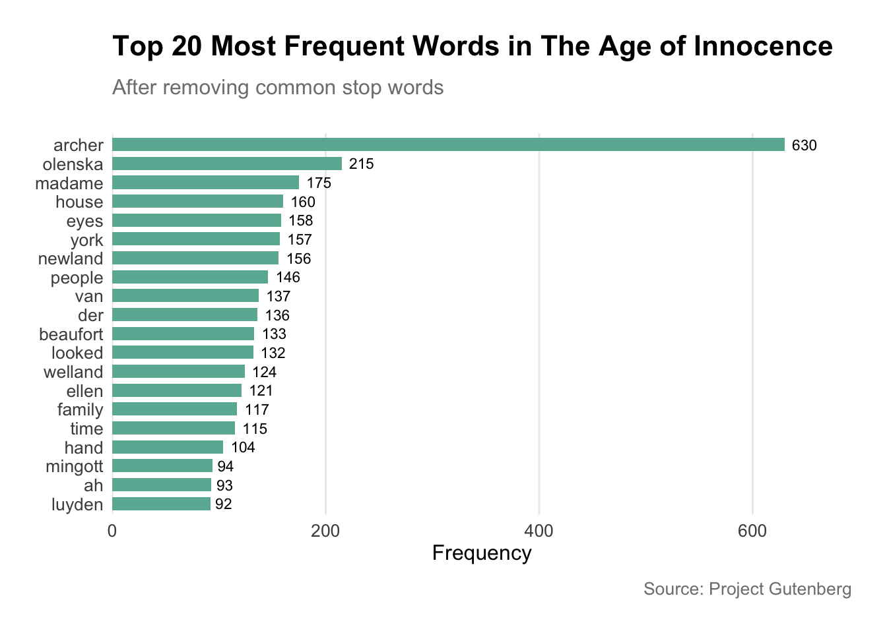
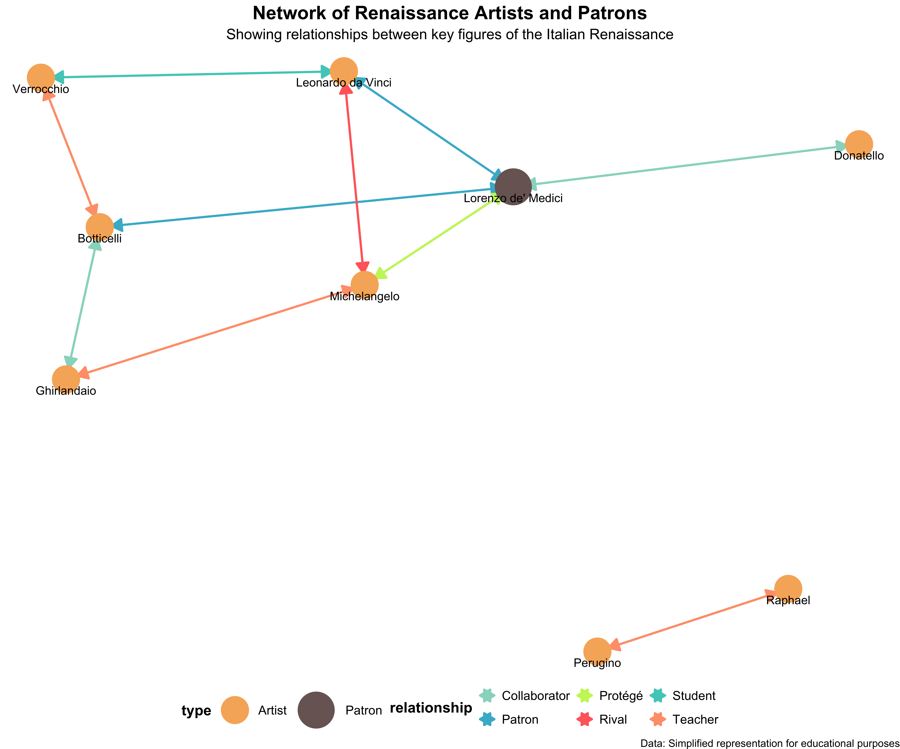

Let’s explore some fascinating examples of how computational methods can be applied to humanities questions.
2.1 Example 1: Text Analysis of Literary Works
Code
library(pacman)p_load(tidyverse, tidytext, wordcloud, gutenbergr, scales, hrbrthemes)# Function to download and process text# gutenberg_works(title == "The Age of Innocence")inno<-gutenberg_download(541)# Analyze word frequenciesword_freq<-inno%>%unnest_tokens(word, text)%>%anti_join(stop_words)%>%count(word, sort =TRUE)%>%top_n(20, n)# Create a bar plot of word frequenciesp<-ggplot(word_freq, aes(x =reorder(word, n), y =n))+geom_col(fill ="#69b3a2", width =0.7)+geom_text(aes(label =n), hjust =-0.3, size =3)+coord_flip()+scale_y_continuous(expand =expansion(mult =c(0, 0.1)))+labs(x =NULL, y ="Frequency", title ="Top 20 Most Frequent Words in The Age of Innocence", subtitle ="After removing common stop words", caption ="Source: Project Gutenberg")+theme_minimal()+theme( plot.title =element_text(size =16, face ="bold", margin =margin(b =10)), plot.subtitle =element_text(size =12, color ="gray50", margin =margin(b =20)), plot.caption =element_text(size =10, color ="gray50", margin =margin(t =10)), axis.text =element_text(size =10), axis.title =element_text(size =12), panel.grid.major.y =element_blank(), panel.grid.minor =element_blank(), plot.margin =margin(20, 20, 20, 20))# Print the plotprint(p)

This word cloud visualizes the most frequent words in The Age of Innocence, giving us a quick insight into common themes and vocabulary.
Discussion
What words stand out to you in this visualization?
How might this kind of analysis complement traditional close reading of literary works?
What limitations might this approach have for understanding the author’s language?
2.2 Example 2: Sentiment Analysis of Jane Austen’s Novels
This visualization shows the emotional trajectory of Jane Austen’s novels over their narrative time.
Discussion: Narrative Emotions
What patterns do you notice in the emotional arcs of Austen’s novels?
How might this type of analysis enhance our understanding of narrative structure?
What challenges might arise in applying sentiment analysis to historical texts?
2.3 Example 3: Network Analysis of Renaissance Artists
Code
library(igraph)library(ggraph)library(tidyverse)# Create a dataset of Renaissance artists and their connectionsrenaissance_connections<-tibble( from =c("Leonardo da Vinci", "Michelangelo", "Raphael", "Donatello", "Verrocchio", "Ghirlandaio", "Perugino", "Botticelli", "Lorenzo de' Medici", "Lorenzo de' Medici", "Lorenzo de' Medici","Michelangelo", "Botticelli", "Ghirlandaio"), to =c("Verrocchio", "Lorenzo de' Medici", "Perugino", "Lorenzo de' Medici", "Botticelli", "Michelangelo", "Raphael", "Ghirlandaio", "Leonardo da Vinci", "Michelangelo", "Botticelli","Leonardo da Vinci", "Verrocchio", "Botticelli"), relationship =c("Student", "Protégé", "Student", "Collaborator", "Teacher", "Teacher", "Teacher", "Collaborator", "Patron", "Patron", "Patron","Rival", "Collaborator", "Collaborator"))# Create the graphrenaissance_graph<-graph_from_data_frame(renaissance_connections, directed =FALSE)# Set node attributesV(renaissance_graph)$type<-ifelse(V(renaissance_graph)$name=="Lorenzo de' Medici", "Patron", "Artist")# Plot the networkset.seed(123)# for reproducibilityggraph(renaissance_graph, layout ="fr")+geom_edge_link(aes(edge_colour =relationship), arrow =arrow(length =unit(4, 'mm'), ends ="both", type ="closed"), start_cap =circle(4, 'mm'), end_cap =circle(4, 'mm'), edge_width =1)+geom_node_point(aes(color =type, size =type))+geom_node_text(aes(label =name), vjust =1.8, hjust =0.5, size =4)+scale_edge_colour_manual(values =c("Student"="#4ECDC4", "Rival"="#FF6B6B", "Patron"="#45B7D1", "Teacher"="#FFA07A", "Collaborator"="#98D8C8", "Protégé"="#C7F464"))+scale_color_manual(values =c("Artist"="#F7B267", "Patron"="#7A6563"))+scale_size_manual(values =c("Artist"=12, "Patron"=16))+theme_void()+labs(title ="Network of Renaissance Artists and Patrons", subtitle ="Showing relationships between key figures of the Italian Renaissance", caption ="Data: Simplified representation for educational purposes")+theme(legend.position ="bottom", plot.title =element_text(hjust =0.5, size =18, face ="bold"), plot.subtitle =element_text(hjust =0.5, size =14), plot.caption =element_text(hjust =1, size =10), legend.text =element_text(size =12), legend.title =element_text(size =14, face ="bold"))

Discussion: Renaissance Art Networks
What insights can we gain about the Renaissance art world from this network visualization?
How might the different types of relationships (e.g., teacher-student, patronage) have influenced the development of Renaissance art?
What limitations might this network analysis have in representing the complex historical reality of the Renaissance art world?
How could this type of analysis complement traditional art historical research methods?
3 Challenges and Considerations in Digital Humanities
3.1 Ethical Considerations
Digital humanities projects often involve ethical considerations, particularly when working with sensitive or personal data.
Warning
Always consider privacy, consent, and potential harm when working with data about individuals or communities.
3.2 Interdisciplinary Collaboration
Digital humanities often requires collaboration between humanists, computer scientists, librarians, and others.
Discussion: Collaboration Challenges (10 minutes)
In small groups, discuss:
What challenges might arise in collaborations between humanists and technologists?
How can these challenges be addressed?
Share your group’s top insights with the class.
3.3 Critical Approaches
It’s important to maintain critical perspectives on the use of digital tools in humanities research.
Note
Remember that computational methods are not neutral. They embed certain assumptions and biases that need to be critically examined.
4 Conclusion
These demonstrations showcase just a few of the exciting possibilities that digital humanities offers for exploring and analyzing humanities data. By combining computational methods with traditional humanities scholarship, we can uncover new patterns, ask novel questions, and gain fresh insights into cultural and historical materials.
Final Reflection
Consider the examples we’ve explored today:
Which technique (word frequency analysis, sentiment analysis, or network analysis) do you find most intriguing? Why?
Can you think of a humanities question or topic from your own interests that might benefit from one of these computational approaches?
Share your thoughts with a partner or the class if time allows.
Source Code
---title: "Introduction to Digital Humanities"format: html: toc: true code-fold: true code-tools: true code-link: true code-block-bg: "#f8f8f8" code-block-border-left: "#31BAE9" highlight-style: githubexecute: freeze: auto---## Slides<iframe src="../slides/s-intro.html" width="100%" height="500px"></iframe>## Digital Humanities Analysis with RLet's explore some fascinating examples of how computational methods can be applied to humanities questions.### Example 1: Text Analysis of Literary Works```{r}#| label: literary-analysis#| warning: false#| message: false#| cache: true # This will cache the results of this specific chunklibrary(pacman)p_load(tidyverse, tidytext, wordcloud, gutenbergr, scales, hrbrthemes)# Function to download and process text# gutenberg_works(title == "The Age of Innocence")inno <-gutenberg_download(541)# Analyze word frequenciesword_freq <- inno %>%unnest_tokens(word, text) %>%anti_join(stop_words) %>%count(word, sort =TRUE) %>%top_n(20, n)# Create a bar plot of word frequenciesp <-ggplot(word_freq, aes(x =reorder(word, n), y = n)) +geom_col(fill ="#69b3a2", width =0.7) +geom_text(aes(label = n), hjust =-0.3, size =3) +coord_flip() +scale_y_continuous(expand =expansion(mult =c(0, 0.1))) +labs(x =NULL, y ="Frequency", title ="Top 20 Most Frequent Words in The Age of Innocence",subtitle ="After removing common stop words",caption ="Source: Project Gutenberg") +theme_minimal() +theme(plot.title =element_text(size =16, face ="bold", margin =margin(b =10)),plot.subtitle =element_text(size =12, color ="gray50", margin =margin(b =20)),plot.caption =element_text(size =10, color ="gray50", margin =margin(t =10)),axis.text =element_text(size =10),axis.title =element_text(size =12),panel.grid.major.y =element_blank(),panel.grid.minor =element_blank(),plot.margin =margin(20, 20, 20, 20) )# Print the plotprint(p)```This word cloud visualizes the most frequent words in The Age of Innocence, giving us a quick insight into common themes and vocabulary.::: {.callout-tip collapse="true"}## Discussion1. What words stand out to you in this visualization?2. How might this kind of analysis complement traditional close reading of literary works?3. What limitations might this approach have for understanding the author's language?:::### Example 2: Sentiment Analysis of Jane Austen's Novels```{r}#| label: austen-sentiment#| warning: false#| message: false#| cache: true#| fig-width: 12#| fig-height: 8#| fig-dpi: 300library(janeaustenr)library(tidyverse)library(tidytext)library(hrbrthemes)# Combine Austen's novelsausten_books <-austen_books() %>%group_by(book) %>%mutate(linenumber =row_number(),chapter =cumsum(str_detect(text, regex("^chapter [\\divxlc]", ignore_case =TRUE))) ) %>%ungroup()# Perform sentiment analysisausten_sentiment <- austen_books %>%unnest_tokens(word, text) %>%inner_join(get_sentiments("bing"), multiple="all") %>%count(book, index = linenumber %/%80, sentiment) %>%pivot_wider(names_from = sentiment, values_from = n, values_fill =0) %>%mutate(sentiment = positive - negative)# Plot sentiment over narrative timeggplot(austen_sentiment, aes(index, sentiment, fill = book)) +geom_col(show.legend =FALSE) +facet_wrap(~book, ncol =2, scales ="free_x") +labs(title ="Sentiment Analysis of Jane Austen's Novels",subtitle ="Emotional trajectory throughout the narrative",x ="Narrative Time",y ="Sentiment Score",caption ="Data: janeaustenr package | Analysis: tidytext" ) +theme_minimal() +theme(text =element_text(size =12),strip.text =element_text(size =14, face ="bold"),panel.grid.minor =element_blank(),plot.title =element_text(size =18, face ="bold"),plot.subtitle =element_text(size =14, color ="gray50"),plot.caption =element_text(size =10, color ="gray50"),axis.title =element_text(size =12, face ="bold"),plot.margin =margin(20, 20, 20, 20) ) +scale_fill_brewer(palette ="Set2") +scale_y_continuous(expand =expansion(mult =c(0.1, 0.1)))# Display summary statisticsausten_summary <- austen_sentiment %>%group_by(book) %>%summarize(mean_sentiment =mean(sentiment),max_sentiment =max(sentiment),min_sentiment =min(sentiment) )knitr::kable(austen_summary, caption ="Summary Statistics of Sentiment Analysis", digits =2)```This visualization shows the emotional trajectory of Jane Austen's novels over their narrative time.::: {.callout-tip collapse="true"}## Discussion: Narrative Emotions1. What patterns do you notice in the emotional arcs of Austen's novels?2. How might this type of analysis enhance our understanding of narrative structure?3. What challenges might arise in applying sentiment analysis to historical texts?:::### Example 3: Network Analysis of Renaissance Artists```{r}#| label: renaissance-network#| warning: false#| message: false#| cache: true#| fig-width: 12#| fig-height: 10#| fig-dpi: 300library(igraph)library(ggraph)library(tidyverse)# Create a dataset of Renaissance artists and their connectionsrenaissance_connections <-tibble(from =c("Leonardo da Vinci", "Michelangelo", "Raphael", "Donatello", "Verrocchio", "Ghirlandaio", "Perugino", "Botticelli", "Lorenzo de' Medici", "Lorenzo de' Medici", "Lorenzo de' Medici","Michelangelo", "Botticelli", "Ghirlandaio"),to =c("Verrocchio", "Lorenzo de' Medici", "Perugino", "Lorenzo de' Medici", "Botticelli", "Michelangelo", "Raphael", "Ghirlandaio", "Leonardo da Vinci", "Michelangelo", "Botticelli","Leonardo da Vinci", "Verrocchio", "Botticelli"),relationship =c("Student", "Protégé", "Student", "Collaborator", "Teacher", "Teacher", "Teacher", "Collaborator", "Patron", "Patron", "Patron","Rival", "Collaborator", "Collaborator"))# Create the graphrenaissance_graph <-graph_from_data_frame(renaissance_connections, directed =FALSE)# Set node attributesV(renaissance_graph)$type <-ifelse(V(renaissance_graph)$name =="Lorenzo de' Medici", "Patron", "Artist")# Plot the networkset.seed(123) # for reproducibilityggraph(renaissance_graph, layout ="fr") +geom_edge_link(aes(edge_colour = relationship), arrow =arrow(length =unit(4, 'mm'), ends ="both", type ="closed"),start_cap =circle(4, 'mm'),end_cap =circle(4, 'mm'),edge_width =1) +geom_node_point(aes(color = type, size = type)) +geom_node_text(aes(label = name), vjust =1.8, hjust =0.5, size =4) +scale_edge_colour_manual(values =c("Student"="#4ECDC4", "Rival"="#FF6B6B", "Patron"="#45B7D1", "Teacher"="#FFA07A", "Collaborator"="#98D8C8", "Protégé"="#C7F464")) +scale_color_manual(values =c("Artist"="#F7B267", "Patron"="#7A6563")) +scale_size_manual(values =c("Artist"=12, "Patron"=16)) +theme_void() +labs(title ="Network of Renaissance Artists and Patrons",subtitle ="Showing relationships between key figures of the Italian Renaissance",caption ="Data: Simplified representation for educational purposes") +theme(legend.position ="bottom",plot.title =element_text(hjust =0.5, size =18, face ="bold"),plot.subtitle =element_text(hjust =0.5, size =14),plot.caption =element_text(hjust =1, size =10),legend.text =element_text(size =12),legend.title =element_text(size =14, face ="bold"))```::: {.callout-tip collapse="true"}## Discussion: Renaissance Art Networks1. What insights can we gain about the Renaissance art world from this network visualization?2. How might the different types of relationships (e.g., teacher-student, patronage) have influenced the development of Renaissance art?3. What limitations might this network analysis have in representing the complex historical reality of the Renaissance art world?4. How could this type of analysis complement traditional art historical research methods?:::## Challenges and Considerations in Digital Humanities### Ethical ConsiderationsDigital humanities projects often involve ethical considerations, particularly when working with sensitive or personal data.::: {.callout-warning}Always consider privacy, consent, and potential harm when working with data about individuals or communities.:::### Interdisciplinary CollaborationDigital humanities often requires collaboration between humanists, computer scientists, librarians, and others.::: {.callout-tip collapse="true"}## Discussion: Collaboration Challenges (10 minutes)In small groups, discuss:1. What challenges might arise in collaborations between humanists and technologists?2. How can these challenges be addressed?Share your group's top insights with the class.:::### Critical ApproachesIt's important to maintain critical perspectives on the use of digital tools in humanities research.::: {.callout-note}Remember that computational methods are not neutral. They embed certain assumptions and biases that need to be critically examined.:::## ConclusionThese demonstrations showcase just a few of the exciting possibilities that digital humanities offers for exploring and analyzing humanities data. By combining computational methods with traditional humanities scholarship, we can uncover new patterns, ask novel questions, and gain fresh insights into cultural and historical materials.::: {.callout-tip collapse="true"}## Final ReflectionConsider the examples we've explored today:1. Which technique (word frequency analysis, sentiment analysis, or network analysis) do you find most intriguing? Why?2. Can you think of a humanities question or topic from your own interests that might benefit from one of these computational approaches?Share your thoughts with a partner or the class if time allows.:::